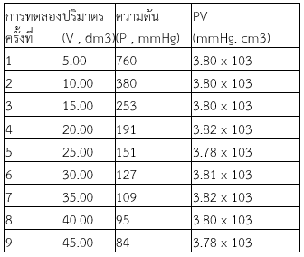
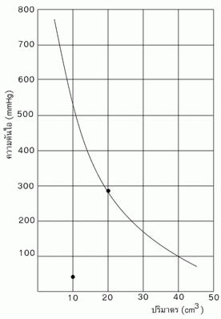
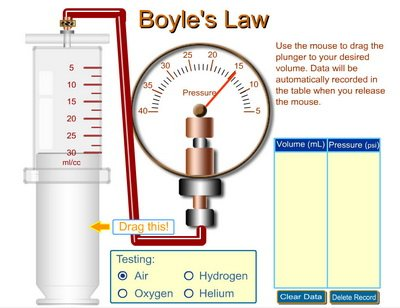
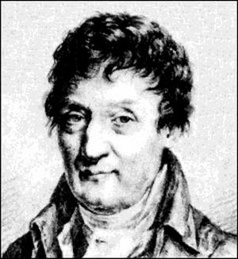
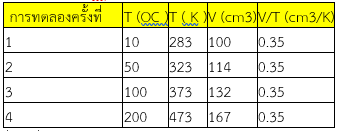
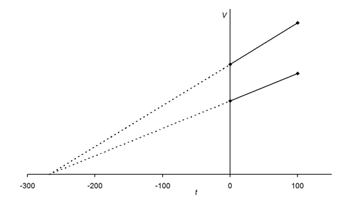
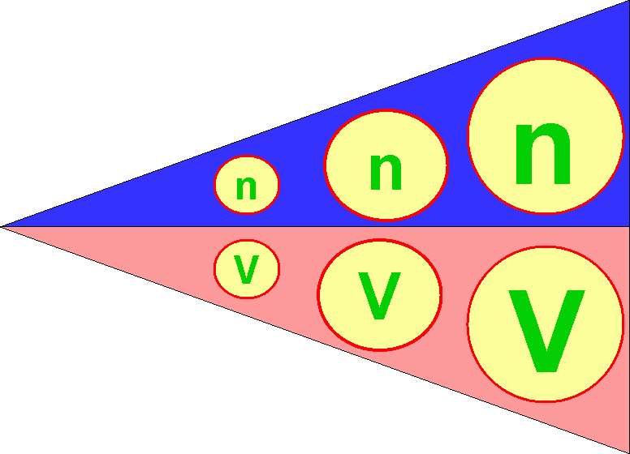
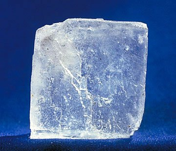
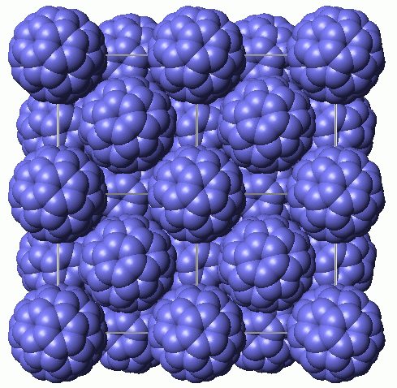
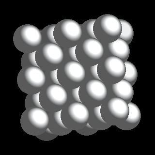

1 บทนำ
สสารทั้งหลาย
มี สถานะสำคัญอยู่ 3 สถานะคือของแข็ง (solid) ของเหลว (liquid) หรือแก๊ส(gas) หรือบางทีอาจจะนับ พลาสมา (แก๊สในสภาพที่มีประจุ)
ผลึกเหลว (liquid crystal) และเกลือหลอมเหลว (molten salt state) เป็นสถานะเพิ่มเติมด้วยในบทนี้เราจะกล่าวถึงเฉพาะสสารที่อยู่ในสถานะแก๊ส
แก๊สมีสมบัติทางกายภาพที่สำคัญอะไรบ้าง เพื่อที่จะเข้าใจ ปรากฏการณ์บางอย่างที่เกิดขึ้นในชีวิตประจำวัน รวมถึงการนำเอาความรู้เรื่องแก๊สไปใช้ประโยชน์ต่อไป
ถ้ากล่าวถึง
ความแตกต่างระหว่าง ของแข็ง ของเหลวและแก๊ส ก็พอจะจำแนกได้ง่ายๆ ดังนี้สารที่อยู่ในสถานะของแข็งมีการจัดเรียงตัวของอนุภาคองค์ประกอบใกล้ชิดกัน
และอนุภาคของแข็งเคลื่อนที่ไม่ได้ แต่ก็สั่นไปมาได้เล็กน้อยเนื่องจากมีช่องว่างระหว่างโมเลกุลน้อยมากส่วนของเหลวสามารถเคลื่อนไหวได้
แต่ก็เคลื่อนที่ได้น้อยกว่าสารที่อยู่ในสถานะแก๊สซึ่งเคลื่อนที่ได้อย่างอิสระ แก๊สเป็นสสารที่มีความหนาแน่นน้อยมาก
ซึ่งไม่มีรูปร่างที่แน่นอนเหมือนของแข็ง ไม่มีปริมาตรที่แน่นอนเหมือนของเหลวและของแข็ง แต่แก๊สจะบรรจุอยู่เต็มภาชนะที่บรรจุ
คือโมเลกุลของแก๊สเมื่อเข้าไปอยู่ในภาชนะใดๆ แม้จะมีหนึ่งอะตอม สองอะตอม หนึ่งโมเลกุล สองโมเลกุล หรือหลายๆ โมเลกุล
แก๊สก็จะเคลื่อนที่ไปมาตลอด
บริเวณที่แก๊สเคลื่อนที่ได้ก็คือปริมาตรของภาชนะที่บรรจุอยู่
เพราะว่าแก๊สมีการเคลื่อนที่ตลอดเวลา ภายใต้การเคลื่อนที่ไปมาย่อมเกิดการชนกันระหว่างโมเลกุลและชนกับผนังภาชนะ
การชนกันเหล่านี้ทำให้แก๊สเกิดมีความดันเมื่อเราต้องการจะเข้าใจธรรมชาติของแก๊สที่มีอยู่ เพื่อจะสามารถค้นหาอะไรบางอย่างจากธรรมชาติของแก๊สต่างๆ
เราจะต้องเข้าใจธรรมชาติของแก๊สเหล่านั้น เมื่อเป็นความพยายามที่อยากจะเข้าใจธรรมชาติ ก็ต้องหาหนทางมาอธิบายรวมทั้งหลักฐานต่างๆ
มายืนยันสิ่งที่เกิดขึ้นนั้น ใครทำนายได้ถูกต้องแม่นยำที่สุดด้วยหลักการและหลักฐานอะไรก็แล้วแต่ ก็จะได้รับการยอมรับจากคนอื่นๆ
ในที่สุด
2 แก๊ส (หน่วยที่เกี่ยวข้อง)
ปริมาตรของก๊าซ
เนื่องจากก๊าซมีสมบัติฟุ้งกระจายและเคลื่อนที่ตลอดเวลา
ปริมาตรของก๊าซจึงมีค่าเท่ากับปริมาตรของภาชนะที่บรรจุก๊าซนั้นหน่วยของปริมาตรคือ ลิตรหรือลูกบาศก์เดซิเมตร มิลลิเมตรหรือลูกบาศก์เซนติเมตร
และลูกบาศก์เมตร
อุณหภูมิของก๊าซ
นิยมวัดเป็นองศาเซลเซียส (oC) องศาฟาเรนไฮต์ (oF) องศาโรเมอร์(oR) และเคลวิน (K) หน่วยที่ใช้มากที่สุดในเรื่องการคำนวณของก๊าซ
คือ เคลวิน (K) ซึ่งสัมพันธ์กับองศาเซลเซียส คือ K = 273 +oC ค่าที่ละเอียดคือ 273.15
ความดันของก๊าซ
หมายถึง แรงกระทำต่อหนึ่งหน่วยพื้นที่ที่ตั้งฉากกัน ในกรณีที่ก๊าซบรรจุอยู่ในภาชนะ ความดันของก๊าซเกิดจากการชนกันระหว่างโมเลกุลของก๊าซกับภาชนะ
หน่วยของความดันคือ
บรรยากาศ (atm) มิลลิเมตรของปรอท (mmHg) นิวตันต่อตารางเมตร ปอนด์ต่อตารางนิ้ว โดย 1 atm = 760 mmHg
STP คือ
อุณหภูมิและความดันมาตรฐานมีค่าเท่ากับ 0 องศาเซลเซียส หรือ 273.15 เคลวิน และ1 บรรยากาศ หรือ 760 มิลลิเมตรของปรอท
ในวิชาเคมีนิยมใช้บรรยากาศ (atm)
3 ทฤษฎีจลน์ของแก๊ส
ทฤษฎีจลน์ของแก๊ส (The kinetic theory of gases)
ทฤษฎีจลน์ของแก๊สเป็นทฤษฎีที่ใช้อธิบายสมบัติทางฟิสิกส์ของแก๊ส
นักวิทยาศาสตร์ที่ได้เสนอทฤษฎีนี้คือ Deniel Bernoulli และทฤษฎีนี้ได้ถูกปรับปรุงโดยนักวิทยาศาสตร์คนอื่น ๆ เพื่อให้มีความสมบูรณ์และถูกต้องยิ่งขึ้น
จนได้ทฤษฎีจลน์ของแก๊สในปัจจุบัน ซึ่งมีข้อความดังนี้
1. แก๊สต่างๆประกอบด้วยอนุภาคที่มีขนาดเล็กมากเรียกว่า
โมเลกุล
2. โมเลกุลของแก๊สอยู่ห่างกันไม่มีแรงยึดเหนี่ยวระหว่างกันและกัน
แต่ละโมเลกุลมีอิสระในการเคลื่อนที่
3. โมเลกุลของแก๊สมีมวลแต่มีขนาดเล็กมากจนถือได้ว่ามีปริมาตรเป็นศูนย์
4. โมเลกุลของแก๊สแต่ละโมเลกุลเคลื่อนที่เป็นเส้นตรงอย่างไม่เป็นระเบียบตลอดเวลาด้วย
อัตราเร็วคงที่(แต่ไม่จำเป็นต้องเท่ากัน)จนปะทะโมเลกุลอื่นหรือผนังภาชนะจึงจะเปลี่ยนทิศทางอาจเปลี่ยนอัตราเร็วด้วย
5. การชนกันของโมเลกุลเป็นแบบยึดหยุ่นสมบูรณ์คือ
เมื่อชนกันแล้วจะไม่มีการสูญเสียพลังงานรวม แต่อาจจะมีการถ่ายเทพลังงานระหว่างโมเลกุลได้
6. ที่อุณหภูมิคงที่
อัตราเร็วเฉลี่ยของแก๊สชนิดหนึ่ง ๆ จะมีค่าคงที่
7. โมเลกุลของแก๊สใด
ๆ จะมีพลังงานจลน์เฉลี่ยค่าหนึ่งค่าหนึ่งซึ่งเท่ากับ ? mv2 (เมื่อ m คือมวลโมเลกุลของแก๊ส และv คือความเร็วในการเคลื่อนที่ของโมเลกุลของแก๊ส)
8. ที่อุณหภูมิเดียวกัน
แก๊สทุกชนิดจะมีค่าพลังงานจลน์เฉลี่ยเท่ากัน และพลังงานจลน์เฉลี่ย ของแก๊สแปรผันตรงกับอุณหภูมิเคลวิน
หมายเหตุ
โมเลกุลของแก๊สที่มีสมบัติเป็นไปตามทฤษฎีจลน์ของแก๊สครบทุกข้อ คือแก๊สในอุดมคติหรือแก๊สสมบัติ ส่วนแก๊สจริงจะมีพฤติกรรมใกล้เคียงแก๊สในอุดมคติ
ก็ต่อเมื่ออยู่ในภาวะอุณหภูมิสูงและความดันต่ำ ตัวอย่างเช่น ทฤษฎีของแก๊สข้อ 2) ที่ว่าโมเลกุลไม่มีแรงยึดเหนี่ยวระหว่างกันและกัน
สำหรับแก๊สจริงย่อมมีแรงยึดเหนี่ยวอย่างแน่นอน แต่แรงยึดเหนี่ยวนั้นจะมีค่ามากหรือน้อยขึ้นอยู่กับชนิดของแก๊ส
แต่อย่างไรก็ตามที่อุณหภูมิสูงโมเลกุลของแก๊สจะมีพลังงานจลน์สูงขึ้น ประกอบกับความดันต่ำด้วย โมเลกุลจึงเคลื่อนที่ออกจากวันมากขึ้นทำให้ระยะห่างระหว่างโมเลกุลมากขึ้น
แรงยึดเหนี่ยวระหว่างโมเลกุลจึงลดน้อยลงหรืออาจน้อยมากจนไม่มีเลย แสดงว่าโมเลกุลของแก๊สดังกล่าวกำลังมีพฤติกรรมคล้ายกับแก๊สสมมติ
คำอธิบายเพิ่มเติมทฤษฎีจลน์ของแก๊ส
1. จากทฤษฎีของแก๊สข้อ
5) เมื่อโมเลกุลชนกันเอง อาจมีการถ่ายเทพลังงานแต่ไม่มีการสูญเสียพลังงานรวมนั้น หมายความว่า พลังงานรวมทั้งหมดของระบบไม่เปลี่ยน
หรือพลังงานรวมของโมเลกุลของแก๊สทั้งสองโมเลกุลที่ชนกันไม่เปลี่ยน แต่เมื่อโมเลกุลสองโมเลกุลชนกันถ้ามีการถ่ายเทพลังงาน
โมเลกุลหนึ่งสูญเสียพลังงานไปเท่าใด อีกโมเลกุลหนึ่งก็จะรับพลังงานเพิ่มขึ้นเท่านั้น
2. จากทฤษฎีจลน์ของแก๊สข้อ
7) และ 8) พลังงานจลน์เฉลี่ยของโมเลกุลของแก๊ส (E) ซึ่งมีค่าเท่ากับ ? mv2 นั้น เป็นสัดส่วนโดยตรงกับอุณหภูมิเคลวิน
หมายความว่าเมื่ออุณหภูมิ เพิ่มขึ้นแก๊สก็จะมีพลังงานจลน์เฉลี่ยเพิ่มขึ้น แต่ถ้าอุณหภูมิลดลงแก๊สก็จะมีพลังงานจลน์เฉลี่ยลดลงด้วย
(E ? T) และเหตุที่พลังจลน์เฉลี่ยของโมเลกุลของแก๊สเป็นสัดส่วนโดยตรงกับอุณหภูมิเคลวิน เพราะว่าความเร็วเฉลี่ยของโมเลกุลของแก๊ส
(v) เป็นสัดส่วนโดยตรงกับอุณหภูมิเคลวิน (อุณหภูมิสูงแก๊สจะมีความเร็วเฉลี่ยสูง อุณหภูมิต่ำแก๊สจะมีความเร็วเฉลี่ยต่ำ)
E = mv2
จากสูตร
ค่าพลังงานจลน์ เฉลี่ยของโมเลกุลของแก๊ส (E) เป็นสัดส่วนโดยตรงกับความเร็วเฉลี่ย (v) กล่าวคือ ถ้า V มีค่ามาก
E ก็จะมีค่ามากด้วย แต่ถ้า v มีค่าน้อย E ก็จะมีค่าน้อยด้วย เนื่องจากค่า v เป็นสัดส่วนโดยตรงกับอุณหภูมิเคลวิน
ดังนั้น ค่า E จึงเป็นสัดส่วนโดยตรงกับอุณหภูมิเคลวินด้วย
การใช้ทฤษฎีจลน์อธิบายสมบัติของแก๊ส
ทฤษฎีจลน์ของแก๊สสามารถใช้อธิบายสมบัติของแก๊สในเรื่องที่เกี่ยวข้องกับอุณหภูมิ
ความดัน ปริมาตร และจำนวนโมเลกุล (หรือ โมล) ของแก๊สได้
1. ใช้อธิบายว่าทำไมแก๊สจึงมีรูปร่างและปริมาตรไม่แน่นอนขึ้นอยู่กับภาชนะที่บรรจุตามทฤษฎีจลน์ของแก๊สทราบว่าโมเลกุลของแก๊สมีขนาดเล็กมากและไม่มีแรงยึดเหนี่ยวระหว่างกันและกัน
ดังนั้นไม่ว่าจะบรรจุแก๊สไว้ในภาชนะชนิดใดก็ตาม โมเลกุลของแก๊สก็จะเคลื่อนที่แพร่กระจายเต็มพื้นที่ภาชนะที่บรรจุ
จึงทำให้แก๊สนั้นมีรูปร่างเหมือนภาชนะที่บรรจุ และแก๊สนั้นจะมีปริมาตรเท่าภาชนะที่บรรจุด้วย เช่น เมื่อบรรจุแก๊สX
จำนวนหนึ่งในถังสี่เหลี่ยม ซึ่งมีปริมาตร 20 dm3 แก๊สX ก็จะมีรูปร่างเป็นรูปสี่เหลี่ยม และมีปริมาตรเท่ากับ 20
dm3 ด้วย
2.ใช้อธิบายว่าทำไมแก๊สจึงมีความดันตามทฤษฎีจลน์ของแก๊สกล่าวว่า
โมเลกุลของแก๊สแต่ละโมเลกุลเคลื่อนที่เป็นเส้นตรงอยู่ตลอดเวลา ด้วยอัตราเร็วคงที่ เกิดการชนกันเอง และชนผนังภาชนะอยู่ตลอดเวลา
การที่โมเลกุลของแก๊สเคลื่อนที่ชนผนังภาชนะตลอดเวลา ทำให้เกิดแรงดัน และผลรวมของแรงดันทั้งหมดที่มีต่อหนึ่งหน่วยพื้นที่เรียกว่า
ความดันของแก๊ส
3. ใช้อธิบายว่าทำไมปริมาตรของแก๊สจึงแปรผกผันกับความดัน
เมื่ออุณหภูมิและจำนวนโมลคงที่ (กฎของบอยล์ )
ปัญหาข้อนี้จะใช้ทฤษฎีจลน์ของแก๊สที่กล่าวว่า
ที่อุณหภูมิคงที่ อัตราเร็วเฉลี่ยของแก๊สชนิดเดียวกันจะมีค่าคงที่ และที่อุณหภูมิคงที่แก๊สทุกชนิดมีพลังงานจลน์เฉลี่ยเท่ากันมาอธิบาย
ดังนั้นจากความสัมพันธ์ที่ว่า เมื่ออุณหภูมิคงที่ปริมาตรของแก๊สแปรผกผันกับความดัน คือ เมื่อปริมาตรของแก๊สลดลง
ความดันของแก๊สจะเพิ่มขึ้น และเมื่อปริมาตรของแก๊สเพิ่มขึ้น ความดันของแก๊สก็จะลดลง ใช้ทฤษฎีจลน์อธิบายได้ดังนี้
การลดปริมาตรแล้วทำให้ความดันเพิ่มขึ้น
เพราะการลดปริมาตรโดยอุณหภูมิคงที่ ถึงแม้ว่าโมเลกุลของแก๊สจะมีความเร็วเฉลี่ยและพลังงานจลน์เฉลี่ยคงที่แต่โมเลกุลของแก๊สคงที่
แต่โมเลกุลของแก๊สจะชนผนังภาชนะบ่อยครั้งขึ้นจึงเกิดแรงดันมากขึ้น ทำให้ความดันของแก๊สเพิ่มขึ้น ในทางตรงกันข้ามถ้าเพิ่มปริมาตรทำให้ความดันลดลง
เพราะการเพิ่มปริมาตรทำให้โมเลกุลของแก๊สชนผนังภาชนะด้วยความถี่ลดลง แรงดันของแก๊สจึงลดลงด้วย
4. ใช้อธิบายว่าทำไมความดันของแก๊สจึงแปรผันตรงกับจำนวนโมล
หรือจำนวนโมเลกุลของแก๊ส เมื่ออุณหภูมิและปริมาตรคงที่
สำหรับปัญหาข้อนี้อธิบายโดยใช้ทฤษฎีจลน์ได้ดังนี้
เนื่องจากโมเลกุลของแก๊สแต่ละโมเลกุลมีการเคลื่อนที่เป็นเส้นตรงอยู่ตลอดเวลาในอัตราเร็วเฉลี่ยคงที่เมื่ออุณหภูมิคงที่
ดังนั้นเมื่อเพิ่มจำนวนโมเลกุล จะทำให้โมเลกุลของแก๊สเคลื่อนที่ชนผนังภาชนะบ่อยครั้งขึ้น เป็นเหตุให้เกิดแรงดันมากขึ้น
นั่นคือความดันของแก๊สเพิ่มขึ้น ในทางตรงกันข้ามถ้าลดจำนวนโมเลกุลของแก๊ส จะทำให้โมเลกุลของแก๊สเคลื่อนที่ชนผนังภาชนะด้วยความถี่ลดลง
ทำให้แรงดันลดลง นั่นคือความดันของแก๊สลดลง
5. ใช้อธิบายว่าทำไมปริมาตรของแก๊สจึงแปรผันตรงกับโมลหรือจำนวนโมเลกุลของแก๊สเมื่ออุณหภูมิและความดันคงที่
(กฎของอาโวกาโดร)
สำหรับปัญหาข้อนี้อธิบายได้ดังนี้
เมื่อแก๊สมีจำนวนโมเลกุลมากขึ้น โมเลกุลของแก๊สจะชนผนังภาชนะที่บรรจุด้วยความถี่สูงขึ้น ทำให้เกิดแรงดันมากขึ้น
นั่นคือแก๊สมีความดันสูงขึ้น และมีค่ามากกว่าความดันภายนอก ถ้าบรรจุแก๊สในกระบอกสูบที่ลูกสูบเคลื่อนที่ได้โดยไม่มีแรงเสียดทานหรือมีน้อย
เมื่อแก๊สมีความดันมากขึ้น ก็จะดันให้ลูกสูบเคลื่อนที่ขึ้น ทำให้ปริมาตรของแก๊สเพิ่มขึ้น ทั้งนี้เพื่อให้ความดันมีค่าคงที่นั่นเอง
ในทางตรงกันข้าม ถ้าแก๊สมีจำนวนโมเลกุลน้อย ก็จะชนผนังภาชนะที่บรรจุในอัตราความถี่ต่ำลงทำให้เกิดแรงดันน้อย นั่นคือแก๊สมีความดันต่ำลง
และต่ำกว่าความดันภายนอกเพื่อรักษาความดันให้คงที่ ลูกสูบก็จะเคลื่อนที่ลง ทำให้ปริมาตรลดลง
6. ใช้อธิบายว่าทำไมปริมาตรของแก๊สจึงแปรผันกับอุณหภูมิเมื่อความดันและจำนวนโมเลกุลของแก๊สคงที่
(กฎของชาร์ล)
จากทฤษฎี
พลังงานจลน์เฉลี่ยของแก๊สเป็นสัดส่วนโดยตรงกับอุณหภูมิเคลวิน นั่นคือเมื่ออุณหภูมิสูงแก๊สจะมีพลังงานจลน์เฉลี่ยสูง
เมื่ออุณหภูมิต่ำแก๊สจะมีพลังงานจลน์เฉลี่ยต่ำ ดังนั้นถ้าบรรจุแก๊สในกระบอกสูบที่ลูกสูบเคลื่อนที่ขึ้นลงได้สะดวก
เมื่ออุณหภูมิ เพิ่มขึ้นโมเลกุลของแก๊สจะมีพลังงานจลน์เฉลี่ยเพิ่มขึ้น จึงเคลื่อนที่ชนผนังภาชนะที่บรรจุได้แรงและบ่อยครั้งขึ้นทำให้แก๊สภายในกระบอกสูบมีความดันมากกขึ้น
และมากกว่าความดันภายนอก ก็จะดันให้ลูกสูบเคลื่อนที่ขึ้นเพื่อรักษาความดันให้คงที่ แก๊สภายในกระบอกสูบจึงมีปริมาตรเพิ่มขึ้น
ในทางตรงกันข้ามถ้าอุณหภูมิลดลง โมเลกุลของแก๊สจะมีพลังงานจลน์เฉลี่ยลดลงจึงเคลื่อนที่ชนผนังภาชนะที่บรรจุเบาลง
และชนด้วยความถี่ต่ำลง ทำให้แก๊สภายในกระบอกสูบมีความดันลดลง และต่ำกว่าความดันภายนอก ทำให้ลูกสูบเคลื่อนที่ลงเพื่อรักษาความดันให้คงที่
แก๊สภายในกระบอกสูบจึงมีปริมาตรลดลง
4 กฏของบอยล์
ความสัมพันธ์ระหว่างปริมาตร ความดัน และอุณหภูมิของแก๊ส
กฎของบอยล์
(Boyle’s Law)
เมื่อทดลองโดยใช้กระบอกฉีดยาและปิดปลายกระบอกฉีดยา
เมื่อกดก้านกระบอกฉีดยาทำให้ปริมาตรของแก๊สในกระบอกฉีดยาลดลง และเมื่อปล่อยมือก้านกระบอกฉีดยาจะเลื่อนกลับสู่ตำแหน่งเดิม
ในทำนองเดียวกันเมื่อดึงก้านกระบอกฉีดยาขึ้น ทำให้ปริมาตรของแก๊สในกระบอกฉีดเพิ่มขึ้น และเมื่อปล่อยมือก้านกระบอกฉีดยาจะเลื่อนกลับสู่ตำแหน่งเดิม
สามารถใช้ทฤษฎีจลน์ของแก๊สอธิบายได้ว่า เมื่อปริมาตรของแก๊สในกระบอกฉีดยาลดลง ทำให้โมเลกุลของแก๊สอยู่ใกล้กันมากขึ้น
จึงเกิดการชนกันเองและชนผนังภาชนะมากขึ้น เป็นผลให้ความดันของแก๊สในกระบอกฉีดยาเพิ่มขึ้นเมื่อเทียบกับตอนเริ่มต้น
ในทางตรงกันข้ามการเพิ่มปริมาตรของแก๊สในกระบอกฉีดยาทำให้โมเลกุลของแก๊สอยู่ห่างกัน การชนกันเองของโมเลกุลของแก๊สและการชนผนังภาชนะน้อยลง
ความดันของแก๊สในกระบอกฉีดยาจึงลดลง
นักวิทยาศาสตร์ได้ทำการทดลองเพื่อศึกษาความสัมพันธ์ระหว่างปริมาตรกับความดันของแก๊ส
โดยควบคุมให้อุณหภูมิคงที่ ได้ผลดังตารางต่อไปนี้

จากผลการทดลองในตารางพบว่า
ผลคูณของความดันกับปริมาตร (PV) ของแก๊สในการทดลองแต่ละครั้งมีค่าค่อนข้างคงที่ และเมื่อเขียนกราฟแสดงความสัมพันธ์ระหว่างความดันกับปริมาตรของแก๊สจะได้ดังรูปต่อไปนี้

จากข้อมูลในตารางและจากกราฟพบว่าขณะที่อุณหภูมิคงที่
ถ้าปริมาตรของแก๊สเพิ่มขึ้นจะทำให้ความดันของแก๊สลดลง และเมื่อปริมาตรของแก๊สลดลง ความดันของแก๊สจะเพิ่มขึ้น
รอเบิร์ต
บอยล์ (Robert Bolye) นักเคมีชาวอังกฤษ ได้ศึกษาเกี่ยวกับการเปลี่ยนปริมาตรของแก๊สในปี ค.ศ. 1662 (พ.ศ. 2205)
และสรุปเป็นกฎเรียกว่า “กฎของบอยล์” ซึ่งมีสาระสำคัญดังนี้
เมื่ออุณหภูมิและมวลของแก๊สคงที่
ปริมาตรของแก๊สจะแปรผกผันกับความดัน

5 กฏของชาร์ล
กฎของชาร์ล(Charle’s Law)
ในการทดลองจุ่มกระบอกฉีดยาซึ่งบรรจุน้ำจำนวนหนึ่งลงในน้ำร้อน
น้ำในกระบอกฉีดยาจะถูกดันออก ในทางตรงกันข้าม ถ้าจุ่มกระบอกฉีดยาลงในน้ำเย็น น้ำจากภายนอกจะเข้าไปแทนที่อากาศในกระบอกฉีดยา
นั่นคือ การเพิ่มอุณหภูมิมีผลให้ปริมาตรของแก๊สเพิ่มขึ้น และการลดอุณหภูมิมีผลให้ปริมาตรของแก๊สลดลงด้วย แสดงว่าอุณหภูมิมีผลต่อการเปลี่ยนแปลงมาตรของแก๊ส
การเปลี่ยนแปลงนี้ใช้ทฤษฎีจลน์ของแก๊สอธิบายได้ว่า
การเพิ่มอุณหภูมิมีผลทำให้พลังงานจลน์เฉลี่ยของแก๊สเพิ่มขึ้น
โมเลกุลของแก๊สจึงเคลื่อนที่เร็วขึ้น ทำให้โมเลกุลชนกันเองและชนผนังภาชนะมากขึ้น รวมทั้งพลังงานในการชนกันสูงขึ้นด้วย
เป็นผลให้ความดันของแก๊สในกระบอกฉีดยาสูงขึ้นด้วย จึงดันน้ำออกจากกระบอกฉีดยาจนความดันของแก๊สภายในเท่ากับภายนอก
จึงสังเกตเห็นว่าแก๊สในกระบอกฉีดยามีปริมาตรเพิ่มขึ้น ในกลับกันเมื่อลดอุณหภูมิ พลังงานจลน์เฉลี่ยของแก๊สในกระบอกฉีดยาจะลดลง
ทำให้การชนกันเองระหว่างโมเลกุลของแก๊สและการชนผนังภาชนะน้อยลง รวมทั้งพลังงานในการชนลดลง ความดันของแก๊สในกระบอกฉีดยาจึงต่ำ
อากาศภายนอกซึ่งมีความดันสูงกว่าจึงดันน้ำให้เข้าไปในกระบอกฉีดยา ความดันภายในจึงเพิ่มขึ้นจนเท่ากับความดันภายนอก
จึงสังเกตเห็นว่าปริมาตรของแก๊สในกระบอกฉีดยาลดลงจนกระทั่งคงที่ จึงสรุปได้ว่าอุณหภูมิเป็นอีกปัจจัยหนึ่งที่มีผลต่อการเปลี่ยนปริมาตรของแก๊ส

จากผลการทดลองพบว่าเมื่อนำข้อมูลมาเขียนกราฟ
จะได้กราฟเส้นตรงที่มีความชันคงที่ และทำให้คาดคะเนได้ว่า ถ้าลดอุณหภูมิของแก๊สลงเรื่อย ๆ แก๊สจะไม่มีปริมาตร
หรือมีปริมาตรเป็นศูนย์ที่อุณหภูมิ –273OC แต่โดยความเป็นจริงแก๊สจะไม่สามารถมีปริมาตรเป็นศูนย์ได้ เนื่องจากเมื่อลดอุณหภูมิลงเรื่อย
ๆ แก๊สจะเปลี่ยนสถานะเป็นของเหลวก่อนที่อุณหภูมิจะถึง –273OC ซึ่งนักวิทยาศาสตร์ได้กำหนดให้อุณหภูมิ –273OC มีค่าเท่ากับ
0 เคลวิน (K) โดยมีความสัมพันธ์คือ T = 273 + tOC
เมื่อทดลองศึกษาการเปลี่ยนปริมาตรของแก๊สเมื่อเปลี่ยนอุณหภูมิ
พบความสัมพันธ์ระหว่างปริมาตรแก๊สกับอุณหภูมิในหน่วยองศาเซลเซียสและในหน่วยเคลวิน ดังตาราง

จากตารางจะเห็นว่า
เมื่อเปลี่ยนอุณหภูมิในหน่วยเซลเซียสเป็นหน่วยเคลวิน อัตราส่วนระหว่างปริมาตรกับอุณหภูมิเคลวินจะมีค่าคงที่จ๊าก–อาเล็กซองเดร์–เซซา
ชาร์ล (Jacqes A.C. Charles) นักวิทยาศาสตร์ชาวฝรั่งเศส ได้ศึกษาความสัมพันธ์ระหว่างอุณหภูมิกับปริมาตรแก๊ส ในปี
ค.ศ.1778 (พ.ศ.2321) และสรุปความ สัมพันธ์เป็นกฎ เรียกว่ากฎของชาร์ล ซึ่งมีใจความว่า “เมื่อมวลและความดันของแก๊สคงที่
ปริมาตรของแก๊สจะแปรผันตรงกับอุณหภูมิเคลวิน”

6 กฏของอาโวกาโดร
อาเมเดโอ อาโวกาโดร
(Lorenzo Romano Amedeo Carlo Avogadro ค.ศ.1776 - 1856)
นักวิทยาศาสตร์ชาวอิตาลีชื่อ
อาเมเดโอ อาโวกาโดร ได้ศึกษาความสัมพันธ์ระหว่างปริมาตรกับปริมาณของแก๊ส โดยเขาได้เสนอสมมติฐานไว้ในปี ค.ศ. 1811
ว่า "ที่อุณหภูมิและความดันเดียวกัน แก๊สต่างชนิดกันที่มีปริมาตรเท่ากันจะมีจำนวนโมเลกุลเท่ากัน" ซึ่งหมายความว่า
แก๊สทุกชนิดจะมีปริมาตรเพิ่มขึ้นเรื่อยๆ เมื่อจำนวนโมเลกุลของแก๊สเพิ่มขึ้นเรื่อยๆ เช่นกัน
แต่ข้อสมมติฐานของเขาไม่ได้รับการยอมรับจากวงการวิทยาศาสตร์ในสมัยนั้นเป็นเวลาเกือบ
50 ปี และต่อมาเมื่อ สตานิซาโล คานนิซาโร (Stanisalo Cannizaro) ได้ทดลองพิสูจน์และได้นำเสนอในที่ประชุมวิทยาศาสตร์เมื่อปี
ค.ศ. 1860 สมมติฐานของอาโวกาโดรจึงได้รับการยอมรับในที่สุด และเพื่อเป็นเกียรติแก่อาโวการโดร ตัวเลข 1 โมลซึ่งเท่ากับ
6.02 x 1023จึงเรียกว่า เลขอาโวกาโดร (Avogadro Number) จากข้อสมมติฐานของอาโวกาโดรเมื่อได้ทดลองซ้ำต่อมาหลายๆ
ครั้งก็ยืนยันความสัมพันธ์ที่เป็นไปตามสมมติฐานอาโวกาโดร จึงตั้งเป็นกฏของอาโวกาโดรขึ้นมา ซึ่งกล่าวว่า "ที่ความดันและอุณหภูมิของแก๊สคงที่
ปริมาตรของแก๊สจะแปรผันตรงกับจำนวนโมเลกุลหรือจำนวนโมลของแก๊สนั้น" ดังแผนภาพด้านล่าง

7 ของแข็ง
ชนิดของผลึก

ของแข็งที่อยู่ในรูปผลึกมีลักษณะที่สำคัญคือมีการจัดเรียงอนุภาคภายในอย่างมีระเบียบในสามมิติ
แต่ละอนุภาคยึดเหนี่ยวด้วยแรงชนิดต่าง ๆ มีโครงสร้างทางเรขาคณิตที่แน่นอน ของแข็งบริสุทธิ์มีจุดหลอมเหลวที่ชัดเจนและคงที่
นั่นคือเมื่ออุณหภูมิถึงจุดหลอมเหลวสารประเภทนี้จะเปลี่ยนสถานะเป็นของเหลวทันที
ถ้าใช้แรงยึดเหนี่ยวระหว่างอนุภาคภายในผลึกเป็นเกณฑ์
สามารถแบ่งของแข็งในรูปผลึกได้ 4 ประเภท ดังนี้
1. ผลึกโมเลกุล
(Molecular crystal)
2. ผลึกโคเวเลนต์ร่างตาข่าย(Network
covalent crystal)
3. ผลึกโลหะ(Metalic
crystal)
4. ผลึกไอออนิก(Ionic
crystal)
ผลึกโมเลกุล (Molecular crystal)
ประกอบด้วยโมเลกุลที่ยึดเหนี่ยวกันด้วยแรงแวนเดอร์วาลส์
และหรือพันธะไฮโดรเจนถ้าเป็นผลึกของโมเลกุลที่ไม่มีขั้ว แรงยึดเหนี่ยวระหว่างโมเลกุลจะเป็นแรงแวนเดอร์วาลส์ประเภทแรงลอนดอน
เช่น แนฟทาลีน น้ำแข็งแห้ง ถ้าเป็นของแข็งที่โมเลกุลมีขั้วจะยึดเหนี่ยวด้วยแรงดึงดูดระหว่างขั้ว หรือพันธะไฮโดรเจน
เช่น นำแข็ง แอมโมเนียแข็ง ซึ่งโมเลกุลจะยึดเหนี่ยวกันด้วยพันธะไฮโดรเจน ของแข็งที่เป็นผลึกโมเลกุลส่วนใหญ่จะมีลักษณะค่อนข้างอ่อนหรือแข็งปานกลาง
มีจุดหลอมเหลวต่ำ ไม่นำไฟฟ้า สำหรับผลึกของโมเลกุลไม่มีขั้วบางชนิดระเหิดได้

ผลึกโคเวเลนต์ร่างตาข่าย(Network covalent crystal)
ประกอบด้วยอะตอมที่ยึดเหนี่ยวกันด้วยพันธะโคเวเลนต์
เช่น แกรไฟต์ เพชร ซึ่งมีอะตอมของคาร์บอนสร้างพันธะโคเวเลนต์กับอะตอมของคาร์บอนอื่นอีก 3 อะตอม และ 4 อะตอมตามลำดับ
เกิดเป็นสารที่มีโครงผลึกร่างตาข่าย ของแข็งประเภทนี้มีจุดหลอมเหลวสูง มีความแข็ง แต่ความแข็งจะมากหรือน้อยขึ้นอยู่กับการจัดเรียงอะตอมในโครงผลึกร่างตาข่าย
ผลึกโลหะ (Metalic crystal)
ประกอบด้วยอะตอมที่ยึดเหนี่ยวกันด้วยพันธะโลหะที่แข็งแรงมาก
ของแข็งประเภทนี้ส่วนใหญ่มีความแข็งและเหนียว สามารถตีเป็นแผ่น บิดงอได้ เป็นตัวนำความร้อนและไฟฟ้าที่ดี แต่อย่างไรก็ตามผลึกโลหะทั้งหมดอาจมีสมบัติไม่สอดคล้องตามที่กล่าวแล้ว
เช่น ตะกั่ว ซึ่งนำไฟฟ้าได้ไม่ดี สำหรับจุดเดือดจุดหลอมเหลวของของแข็งประเภทนี้ค่อนข้างสูงและแตกต่างกันไปตามความแข็งแรงของพันธะโลหะ
แต่มีผลึกโลหะบางชนิดที่มีลักษณะค่อนข้างอ่อน มีจุดเดือดและจุดหลอมเหลวต่ำ เช่น โพแทสเซียม (K) โซเดียม (Na)

ผลึกไอออนิก (Ionic crystal)
ประกอบด้วยไอออนบวกและไอออนลบที่มีขนาดไอออนแตกต่างกัน
และยึดเหนี่ยวกันด้วยแรงดึงดูดระหว่างประจุไฟฟ้า ของแข็งประเภทนี้จึงมีลักษณะแข็งและเปราะ มีจุดหลอมเหลวและจุดเดือดสูง
เมือเป็นของแข็งไม่นำไฟฟ้า แต่จะนำไฟฟ้าได้เมื่อเป็นของเหลวหรือเป็นสารละลายในน้ำ